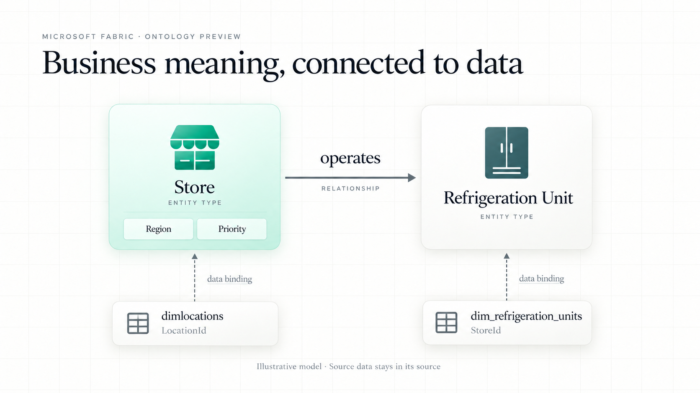
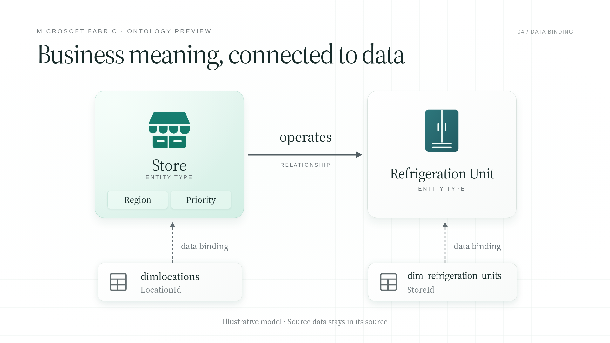
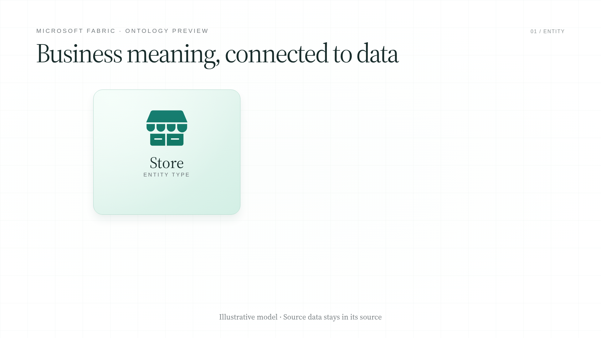
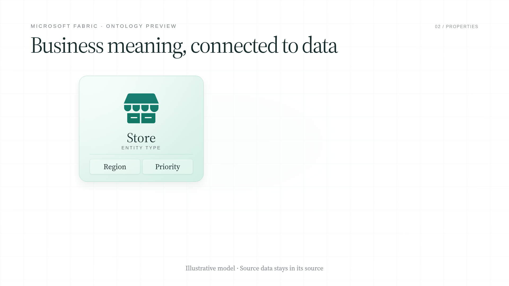
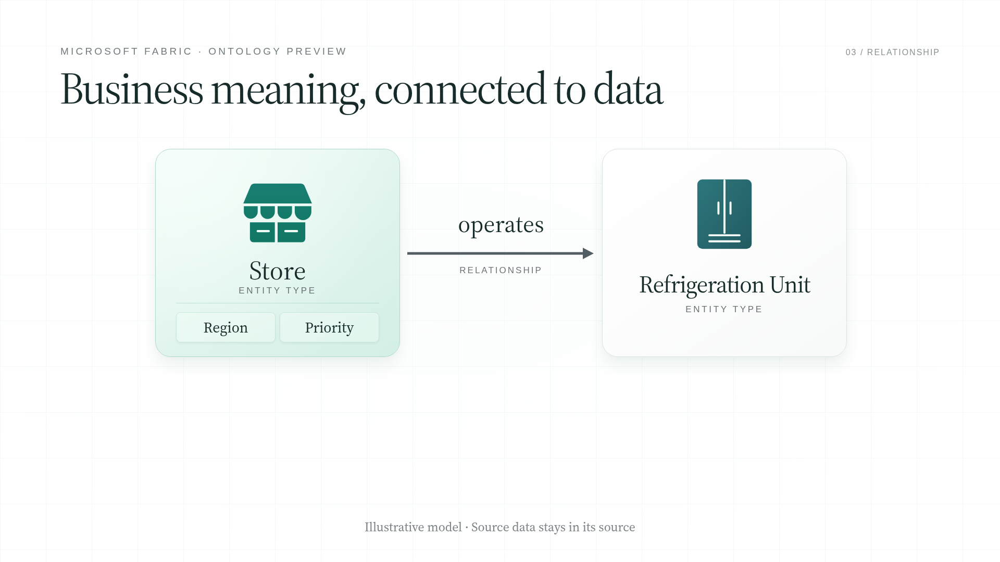

New-transcript pilot · 26 seconds · Ontology preview · Synthetic narration
Download MP4 · Editable scene playback · Reasoning and claims



Introduce Store as the stable concept.

Region and Priority appear inside its card.

The new peer appears, then the named operates edge connects them.
Tables below and dashed mappings separate source data from business meaning.
Conceptual illustration, not Fabric UI or an executed query. Source table names and relationship keys follow Microsoft's retail tutorial. Region and Priority are illustrative property names from the script. Visual judgment remains with the reviewer.